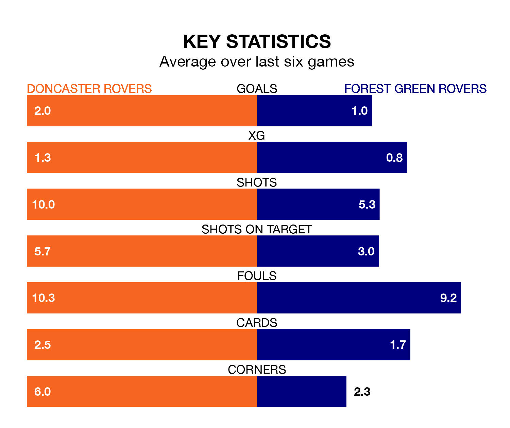

Doncaster Rovers host Forest Green Rovers on Saturday at the Eco-Power Stadium in EFL League Two.
In their last league match, on March 16, Doncaster beat Swindon Town 2-1 away, with goals from Hakeem Adelakun and Maxime Biamou Ngapmou Yoke.
Forest Green lost, 1-0 at home against Sutton United.
Forest Green are 23rd in the table after 38 games, of which they have won eight and drawn nine, earning 33 points.
Doncaster are five places ahead of Forest Green Rovers in 18th, with 13 wins and seven draws putting them on 46 points.
Doncaster Rovers are in good form in EFL League Two, with four wins and a draw from their last six games.
With three wins and a draw over that period, the Green's form is worse – they have taken 10 points from 18, compared to the Rovers' 13.
With 38 goals in 38 games so far this season, the visitors are the league's second-lowest scorers with 1.0 goals per game. And they are conceding more than average, letting in 63 goals at a rate of 1.7 per game.
The home side are also below average scorers, with 1.3 goals per game, compared to a league average of 1.5. They have conceded 1.7 goals per game.
Saturday's match will be refereed by Anthony Backhouse, who is taking charge of his first EFL League Two game this season.
He is yet to oversee a match featuring either Doncaster or Forest Green this season.
Updated: 10:19 (UTC), 22/03/24